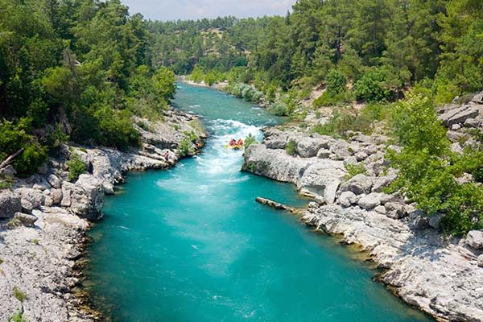

We are a team dedicated entirely to adventure sports and outdoor activity
History
Deseret Rafting can be traced back to 1811 when the first recorded attempt to navigate the River was planned. With no training, experience, or proper equipment, the river was found to be too difficult and dangerous. Hence, it was given the nickname “Mad River.
Now Deseret rafting has risen to a popular sport and hobby, growing more and more every year